Polyhedron is a solid whose faces are plane polygons. A regular polyhedron is a solid with all its faces identical regular polygons. There are only five regular polyhedrons, namely tetrahedron, hexahedron (cube), octahedron, dodecahedron and icosahedron. These solids are also known as Platonic solids in honor of Plato (427 - 348 B.C.).
Tetrahedron:
No. of Faces: 4
Faces: Triangle
No. of Edges: 6
No. of Vertices: 4
Volume: ${1 \over {12}}{e^3}\sqrt 2 $
Hexahedron:
No. of Faces: 6
Faces: Square
No. of Edges: 12
No. of Vertices: 8
Volume: ${e^3}$
Octahedron:
No. of Faces: 8
Faces: Triangle
No. of Edges: 12
No. of Vertices: 6
Volume: ${1 \over {3}}{e^3}\sqrt 2 $
Dodecahedron:
No. of Faces: 12
Faces: Pentagon
No. of Edges: 30
No. of Vertices: 20
Volume: ${{{e^3}} \over 4}\left( {15 + 7\sqrt 5 } \right)$
Icosahedron:
No. of Faces: 20
Faces: Triangle
No. of Edges: 30
No. of Vertices: 12
Volume: ${5 \over {12}}{e^3}\left( {3 + \sqrt 5 } \right)$
Cube is a polyhedron with all six faces a square.
Rectangular parallelepiped is a polyhedron with all six faces a rectangle.
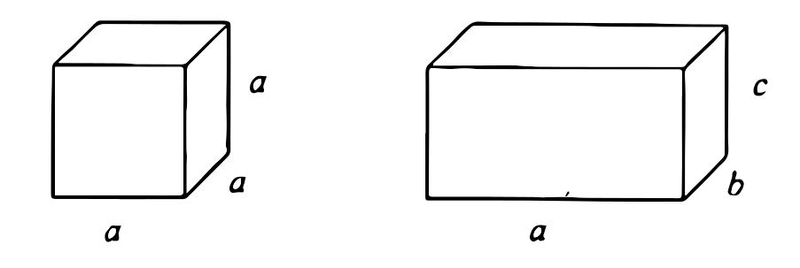
Volume of cube: $V=a^3$
Volume of rectangular parallelepiped: $V=abc$
Surface area of cube: $A=6{a^2}$
Surface area of rectangular parallelepiped: $A=2(ab+bc+ca)$
Prism is a polyhedron with two faces (bases) parallel and congruent and whose remaining faces (lateral faces) are parallelograms.
Right prism is one which has its lateral faces perpendicular to the base.
Oblique prism is one which has it lateral faces not perpendicular to the base.
Truncated prism is a portion of a prism contained between the base and a plane that is not parallel to the base.
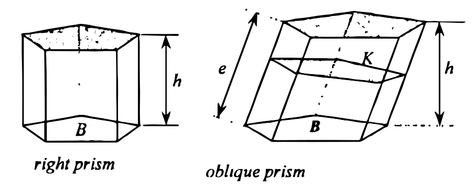
Volume of prism: $V=Bh=Ke$
Lateral area of prism: $A=ep_k$
where:
B = area of the base
h = altitude of prism
K = area at right section
e = lateral edge
pk = perimeter of right section
Cylinder is a solid bounded by a closed cylindrical surface and two parallel planes.
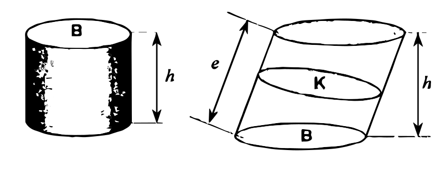
Volume of cylinder: $V=Bh=Ke$
Lateral area of cylinder: $A=ep_k$
where:
B = area of the base
h = altitude of prism
K = area at right section
e = lateral edge
pk = perimeter of right section
Pyramid is a polyhedron of which one face, called the base, is a polygon of any number of sides and the other faces are triangles which have a common vertex. Cone is a solid bounded by a conical surface (lateral surface) whose directrix is a closed curve, and a plane (base) which cuts all the elements.
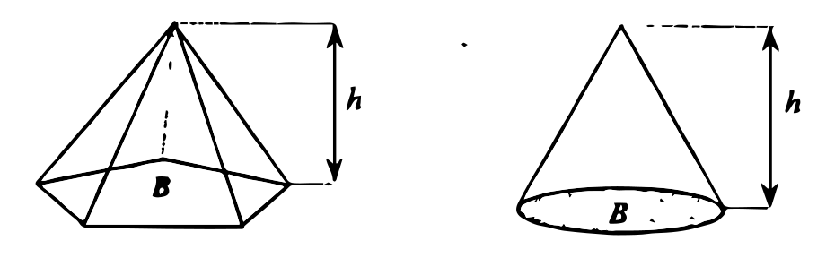
Volume of pyramid / cone: $V = {1 \over 3}Bh$
where:
B = area of the base
h = altitude
Frustum (of a pyramid/cone) is a portion of the pyramid / cone included between the base and a section parallel to the base.
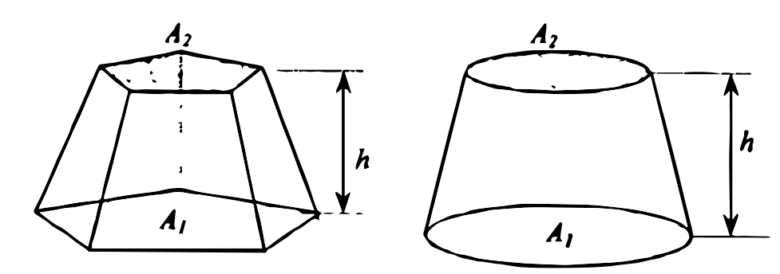
Volume of frustum of pyramid / cone:
$$V = {h \over 3}\left( {{A_1} + {A_2} + \sqrt {{A_1}{A_2}} } \right)$$
where:
R = bigger radius
r = smaller radius
For cone:
$$V = {{\pi h} \over 3}\left( {{R^2} + {r^2} + Rr} \right)$$
Prismatoid is a polyhedron having for bases two polygons in parallel planes and for lateral faces triangles or trapezoids with one side lying in one base, and the opposite vertex or side lying in the other base of the polyhedron.
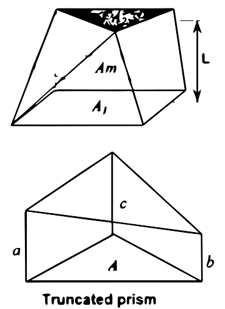
Volume of prismatoid:
$$V = {L \over 6}\left( {{A_1} + 4Am + {A_2}} \right)$$
This formula is known as Prismoidal formula
Volume of truncated prism:
$$V = {{A(a + b + c)} \over 3}$$
Sphere is a solid bounded by a closed surface every point of which is equidistant from a fixed point called center.
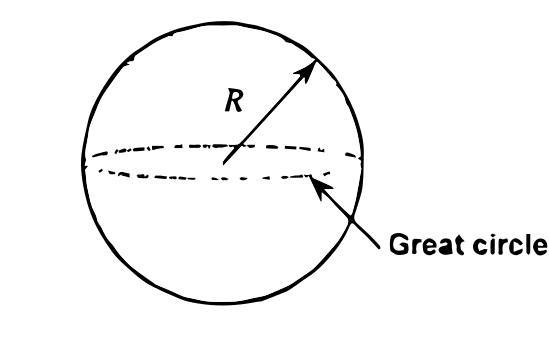
Volume of sphere: $V = {4 \over 3}\pi {R^3}$
Surface area of sphere: $A = 4\pi {R^2}$
Zone is that portion of the surface of a sphere included between two parallel planes.
Spherical segment is a solid bounded by a zone and the planes of the zone's base.
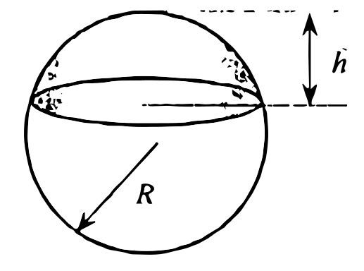
Area of zone: $A = 2\pi Rh$
Volume of spherical segment: $V = {{\pi {h^2}} \over 3}\left( {3R - h} \right)$
Spherical sector is a solid generated by rotating a sector of a circle about an axis which passes through the center of the circle but which contains no point inside the sector.
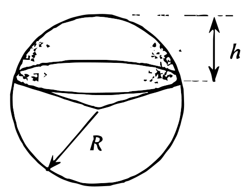
Volume of spherical sector: $V = {1 \over 3}AR$
where: A = area of zone
Spherical pyramid is a pyramid formed by a portion of a surface of a sphere as base and whose elements are the edges from the vertices of the base to the center of the sphere.
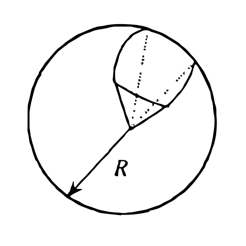
Volume of spherical pyramid: $V = {{\pi {R^3}E} \over {540}}$
where: E = spherical excess of polygon ABCD in degrees
Spherical wedge is a portion of a sphere bounded by two half great circles and an included arc.
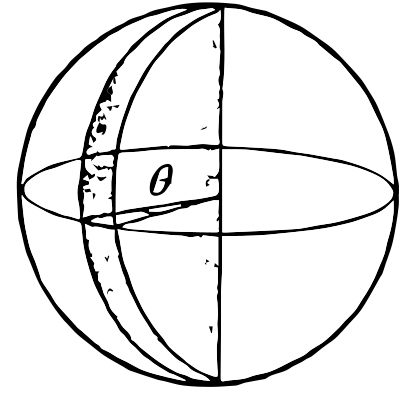
Volume of spherical wedge: $V = {{\pi {R^3}\theta } \over {270}}$
Torus is a solid formed by revolving a circle about a line not intersecting it.
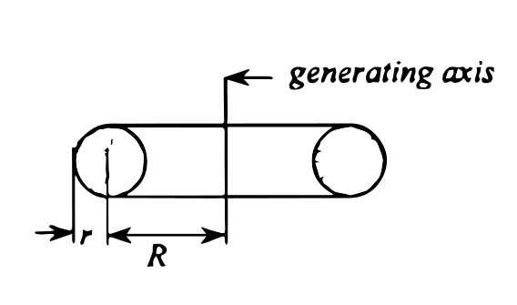
Volume of torus: $V = 2{\pi ^2}R{r^2}$
Lateral area of torus: $A = 4{\pi ^2}Rr$
where:
R = distance from axis to center of generating circle
r = radius of generating circle
Ellipsoid (Spheroid) is a solid formed by revolving an ellipse about its axis.
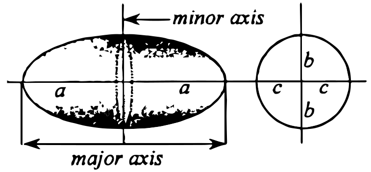
Volume of general ellipsoid: $V = {4 \over 3}\pi abc$
Prolate spheroid is a solid formed by revolving an ellipse about its major axis.
$$V = {4 \over 3}\pi a{b^2}$$
Oblate spheroid is a solid formed by Revolving an ellipse about its minor axis.
$$V = {4 \over 3}\pi {a^2}b$$
Lateral area is the total area of the faces of the polyhedron excluding the base.
Surface area refers to the total area of the faces of the polyhedron including the bases.
Anchor ring or Doughnut is another term for a torus.
Rhomboid is another term of a parallelogram.
Geoid is the actual shape of the earth although earth most of the time is regarded as a spheroid or ellipsoid.
Cavalieri's Theorem states that solids of equal height have equal volume if sections parallel to and equidistant from their bases have equal area. This is named after Bonaventura Cavalieri (1598-1647).